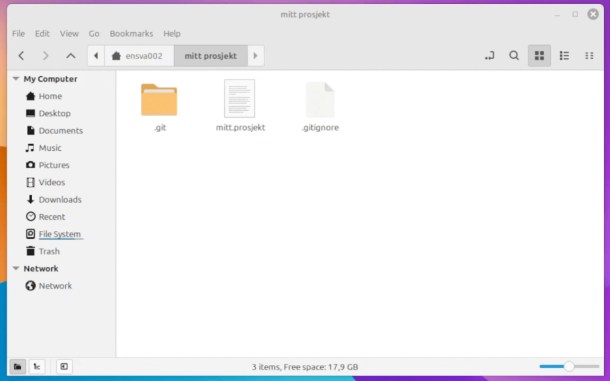
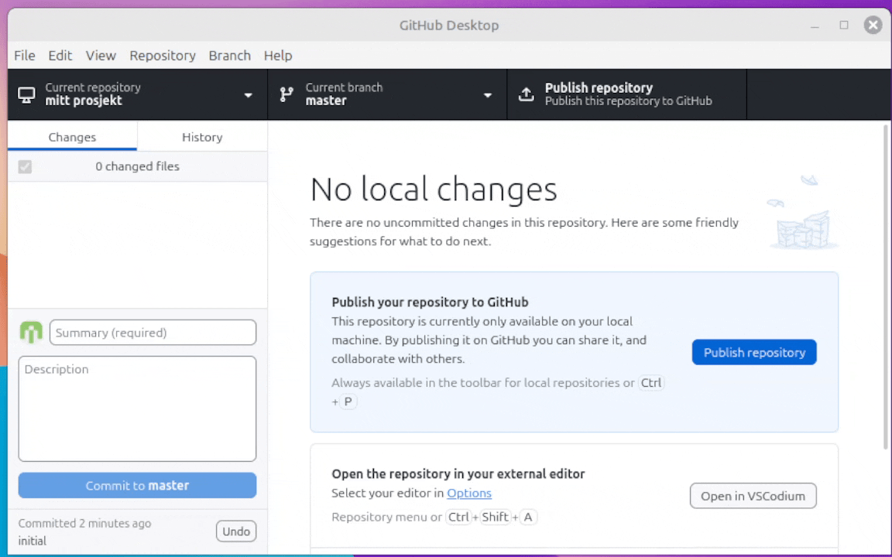

4 - Git i spillutvikling
📦Store filer
Binærfiler, som bilder, lyd og video, egner seg dårlig til versionskontroll med git. Du vil fort ende opp med masse data som kan fylle all plassen du har til rådighet på din remote repository (github/gitlab). Et repo er anbefalt å holdes på under 1GB og det frarådes å gå over 5GB Her er noen løsninger for å holde størrelsen nede.
Git-lfs
Git Large File Storage er et tilegg til git som håndterer større filer på et mer effektivt vis. Du vil fremdeles laste filene opp på github, men de vil ikke bli med i historien, som igjen vil si at de ikke vil vokse seg større over tid, og er lett nok å fjerne for å rydde plass.
- Last ned med homebrew eller apt i terminalen:
#Mac
brew install git-lfs
#Linux Mint
sudo apt install git-lfs- Så må det installeres med git med denne kommandoen:
git lfs install- I terminalen, naviger til prosjekt mappen din og legg til hva slags filer git-lfs skal håndtere. Anbefalt å gjøre dette med bildefiler, lydfiler og arbeidsfiler til adobe programmer (photoshop, illustrator, osv).
Eksempel:
git lfs track "*.psd" "*.jpg" "*.mp3" "introFilm.mov"Les mer om git-lfs: https://git-lfs.com/
Git ignore
Om du har virkelig store filer, 100MB og oppover, så kan det lønne seg å be git ignorere filen, og heller dele denne med gruppen på annet vis, f.eks. via OneDrive.
For å redigere hvilke filer git ignorerer kan du lage en .gitignore fil i prosjekt mappen din. (Obs: ikke putt denne filen i .git mappen). Så kan du på hver linje skrive navnet på filen du vil ignorere. Du kan også bruke wildcard * til å f.eks ignorere alle filer av en type.

Du kan også redigere gitignore med github desktop.

🧑💻Jobbe i team
Commit og fetch OFTE
Hver gang du skal legge til en ny ting, fetch. Da passer du på at du alltid jobber med den nyeste versionen, da ungår du mange store merge confilicts.
Push ofte
Hver gang du er ferdig med noe som virker, push. På dette viset vil de du jobber med alltid ha tilgang til det siste arbeidet ditt. Igjen, dette hjelper til med å ungå store merge confilicts.
Bruk branches
Vi har gått gjennom flere tilfeller hvor branches er praktisk. Her er en ny spesefikk for å jobbe i teams. Om du sitter å jobber i din egen branch, så kan du, uten å ødelegge for andre pushe uferdig kode. F.eks. det er slutten av timen, men du vil jobbe hjemme på din egen pc, så kan du fint pushe den uferdige koden uten at alle de andre på teamet sitter igjen med et spill de ikke kan jobbe med eller teste.
Unngå å jobbe med den samme filen.
Kommuniser med gruppen din, pass på at ikke flere rører samme fil samtidig. Her blir det fort mange merge conflicts, SPESIELT når du jobber med filer som ikke er ren kode, som f.eks. noder og scener i Godot.
Et eksempel, du skal jobbe med spiller figuren, og en på teamet ditt skal jobbe med en level, ikke test spilleren i levelen som noen andre jobber på. lag heller din egen scene hvor du tester ditt arbeid.
Les feilmeldinger nøye, og løs konflikter.
Det kommer til å bli merge conflicts, og dette er noe dere må lære dere å løse. Har dere fulgt punktene over skal de ikke bli veldig infløkte. Ved å lese feilmeldingene som kommer når det er en merge conflict, så er det ofte veldig tydelig hva som må fikses. VS Code har innebygde verktøy for å fort løse en konflikt, og Godot vil spørre om du vil bruke den nye versionen av noden eller den du jobber på.